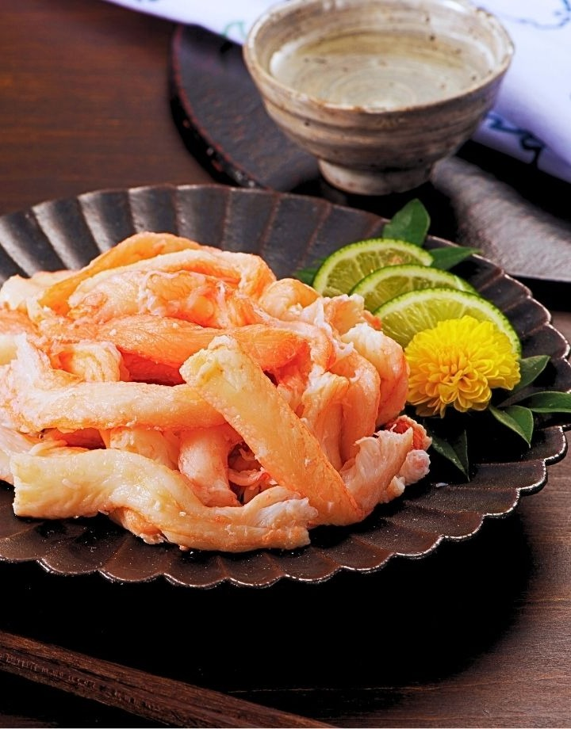
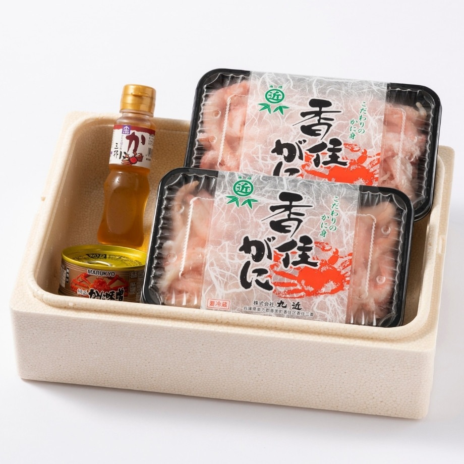
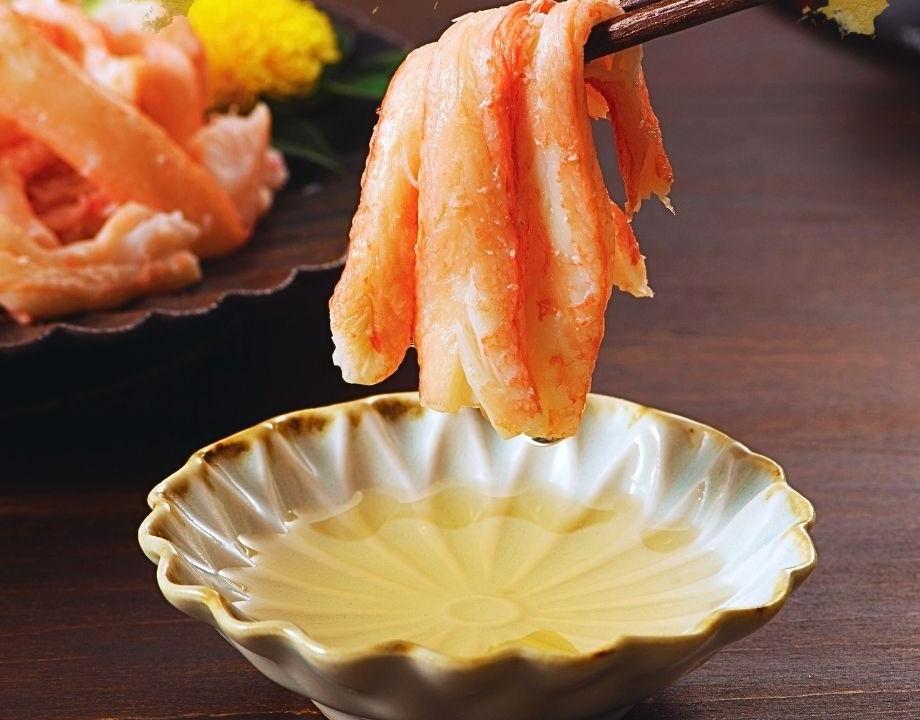

水揚げ当日に、
浜茹で・即加工。
兵庫県・香住港で水揚げした香住ガニを、その日のうちに浜茹で。鮮度が高いうちに一気に加工するから、雑味のない澄んだ甘みとみずみずしさが際立ちます。
 株式会社丸近｜【公式サイト】
株式会社丸近｜【公式サイト】
兵庫県香住港産 香住ガニ
水揚げ当日に浜茹で、職人が一つひとつ手作業でむき身に。
殻むき不要・解凍不要だから、
忙しい日でも、開けてすぐご馳走が並びます。

兵庫県・香住港で水揚げした香住ガニを、その日のうちに浜茹で。鮮度が高いうちに一気に加工するから、雑味のない澄んだ甘みとみずみずしさが際立ちます。
職人が一つひとつ手作業で殻から身を取り出し、むき身に仕上げてお届け。解凍もいらないので、忙しい日でもパックを開けるだけでご馳走になります。

300g×2パックの合計600gに、コク深いかに味噌とさっぱりかに酢がセット。カニ約10杯分ものむき身を、そのままでもアレンジでもたっぷりお楽しみいただけます。

・・・ 一度食べたら、もう戻れない。
「忙しい日でも、
簡単にごちそう。」
殻をむく手間も、解凍を待つ時間もいりません。
パックを開けた瞬間から、香住ガニの甘い香りが立ちのぼります。
お皿に盛って、付属のかに酢をつけるだけ。香住ガニ本来の甘みをダイレクトに。
酢飯にたっぷり乗せるだけで、食卓が華やぐ贅沢なちらし寿司の出来上がり。
出汁にかに味噌を溶かし、むき身とご飯を煮込めば、ふわふわの贅沢な一杯に。
バターでさっと炒めるだけで、ジューシーで香ばしい一品に大変身します。
★★★★★
「我が家にとっては最高の内容でした！冷凍されていないからか、カニの甘みを感じられ、とてもおいしいと感じました。殻をむく手間がないので、そのままはもちろん、アヒージョやかに味噌を入れたグラタンがとても美味しかったです。」
★★★★★
「棒身とほぐし身とのことでしたが、ほぼ棒身のほぐし身で良い意味でビックリしました。ボイルのむき身は想像では味が薄いかなと思っていましたが、しっかりとカニで美味しかったです。予想以上に量もたっぷりでした。」
★★★★★
「殻むきの手間がゼロなのが本当にありがたい。忙しい平日の夕食にも、そのままでも、雑炊にしても大満足でした。子どもも大喜びでリピート決定です。」
・・・ 賞味期限は、発送日から3日。
「新鮮なうちに、
食卓へ。」
冷凍せず、鮮度を活かしたまま冷蔵でお届けするからこそのおいしさです。
漁の状況によって入荷が変動するため、売り切れ次第、次回入荷までお待ちいただきます。
| 商品名 | 香住ガニ かに身セット（むき身） |
|---|---|
| 内容量 | 合計600g（300g×2パック）、かに味噌・かに酢付き |
| 原材料 | ベニズワイガニ（兵庫県産）、食塩 |
| 産地 | 兵庫県・香住港水揚げ（香住ガニ） |
| 加工者 | 株式会社 丸近 |
| 賞味期限 | 発送日から3日 |
| 保存方法 | 要冷蔵（0〜5℃） |
| お召し上がり方 | 殻むき・解凍不要。そのままかに酢で、またはちらし寿司・かに丼・雑炊・バター焼きなどでお楽しみください。 |
| アレルギー | かに（同一工場でえび・小麦・いかを含む製品を製造） |
| ご注意 | 漁期は9月1日〜5月31日。年末年始（12月25日〜1月10日）は着日指定不可です。 |
この鮮度、この手軽さ、ご家庭で。
※ 漁の状況により入荷が変動します。売り切れ次第、次回入荷まで販売休止となります。